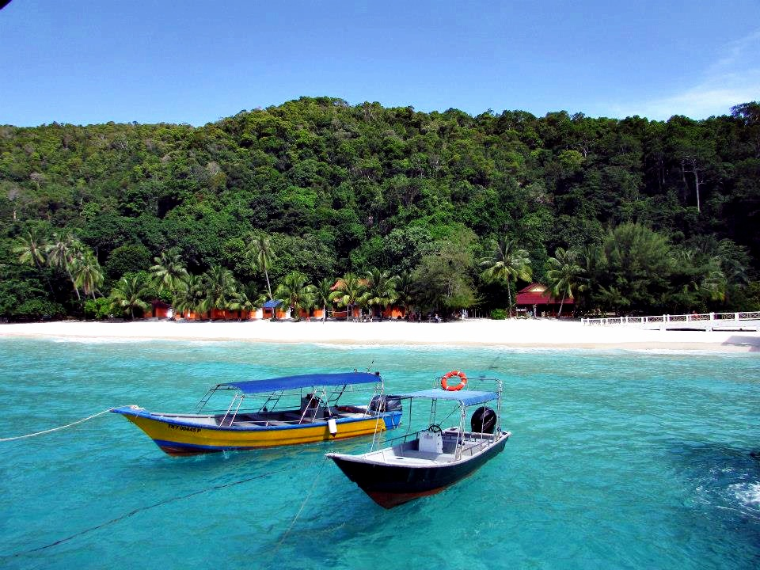

Haïti est un pays riche en culture et en traditions, issues de plusieurs civilisations, indienne, africaine, occidentale et créole.
Haïti est aussi connu pour ses belles plages, ses paysages et ses monuments historiques tels que la Citadelle La Ferrière ou le Palais Sans Soucis.

LISTES DES PRATIQUES CULTURELLES CLASSEES AU REGISTRE DU PATRIMOINE CULTUREL IMMATEREIL D’HAITI
1. LE CONTE ORAL TEZEN 21 NOVEMBRE 2012 # 001-21 - NOV-2012
2. LE TRESE RIBAN / 21 NOVEMBRE 2012 / # 002-21-NOV-2012
3. L’ART DU BATON OU JEU DE BATON DE L’ARTIBONITE / 21 NOVEMBRE 2012 / # 003-21-NOV-201
4. JWÈT KAY 21 NOVEMBRE 2012 / 004-21-NOV-2012
5. LA PRATIQUE DU « FER DECOUPE OU METAL DECOUPE » DU VILLAGE DE NOAILLES, CROIX-DES-BOUQUETS / 20 MAI 2019 / # 005-20-MAI-2019
6. LE RARA ET SES DIFFERENTES MANIFESTATIONS TERRITORIALES / 21 OCTOBRE 2019 / # 006-21-OCT-2019
7. LA MUSIQUE ET LA DANSE COMPAS / 21 OCTOBRE 2019 / # 007-21-OCT-2019
8. LA CONTREDANSE / 21 OCTOBRE 2019 / # 008-21-OCT-2019
9. LE SAVOIR ET LE SAVOIR-FAIRE LIEE À LA TECHNIQUE DU « TRACE VÈVÈ » /21 OCTOBRE 2019 /# 009-21-OCT-2019
10. LES TECHNIQUES DE PRODUCTION DES MASQUES EN PAPIER MÂCHE DE JACMEL / 21 OCTOBRE 2019 / # 010-21-OCT-2019
11. LA TECHNIQUE DE PRODUCTION TRADITIONNELLE DE LA DOUS MAKOS DE PETIT-GOAVE / 21 OCTOBRE 2019 /# 011-21-OCT-2019
12. LA TECHNIQUE DE PRODUCTION TRADITIONNELLE DE KONPARET DE JEREMIE / 21 OCTOBRE 2019 / # 012-21-OCT-2019
13. LA TECHNIQUE DE PREPARATION TRADITIONNELLE DU LALO DE L’ARTIBONITE / 21 OCTOBRE 2019 / # 013-21-OCT-2019
14. LA TECHNIQUE DE PREPARATION TRADITIONNELLE DU TCHAKA / 21 OCTOBRE 2019 / # 014-21-OCT-2019
15. LA TECHNIQUE DE PREPARATION TRADITIONNNELLE DE LA SOUPE JOUMOU (SOUPE GIRAUMON) OU SOUPE DE L’INDEPENDANCE / 21 DECEMBRE 2020 / # 015-21-DEC-2020
16. TECHNIQUE DE PRODUCTION TRADITIONNELLE DE LA CASSAVE / 14 JANVIER 2021 / # 016-14-JAN-2021
17. LE CARNAVAL DE JACMEL / 14 JANVIER 2021 / # 017-14-JAN-2021
18. TECHNIQUE DE PRODUCTION TRADITIONNELLE DU CLAIRIN D'HAITI (25 Mars 2021/ # 018-25-Mar-2021)
19. TECHNIQUE DE PRODUCTION DU RHUM BARBANCOURT (25 mars 2021/#019-25-Mar-2021 )